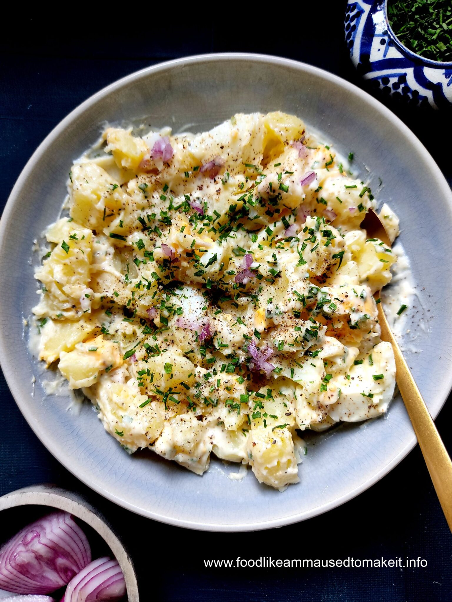

Potato and boiled egg mayo salad

Description:
A BBQ and Sunday lunch favourite. This potato salad recipe needs minimal ingredients and serves 4. To be prepared on stovetop.
Ingredients:
- 3 large potatoes
- 2 large eggs
- A small red onion
- Parsley
- Mayonnaise
Method:
- Rinse the potatoes, place them in a pot with boiling water and a pinch of salt. Boil the potatoes for 10 to 15 minutes.
- Boil eggs for 6 minutes or until hard boiled.
- Allow both potatoes and eggs to cool down.
- Slice the potatoes into cubes and cut up the boiled eggs, add both into one bowl.
- Chop the red onion into fine cubes and add to the potatoes and eggs.
- Add a few tablespoons of mayonnaise and gently stir the mixture.
- Garnish with some parsely and store in the fridge until ready to serve.
Home page